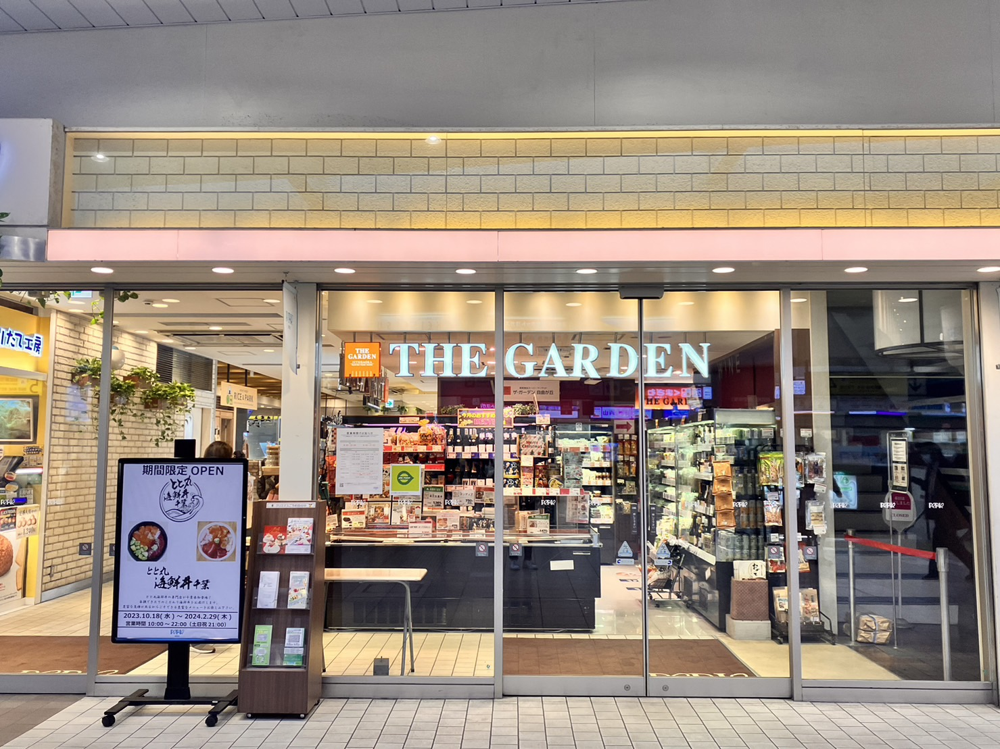
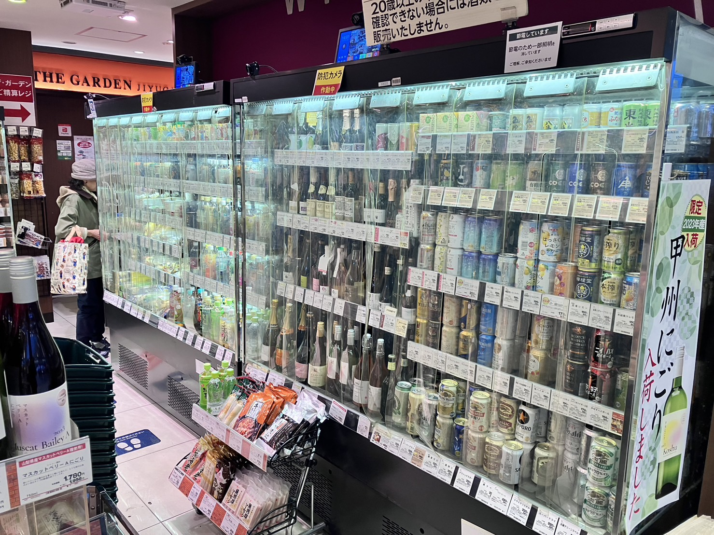
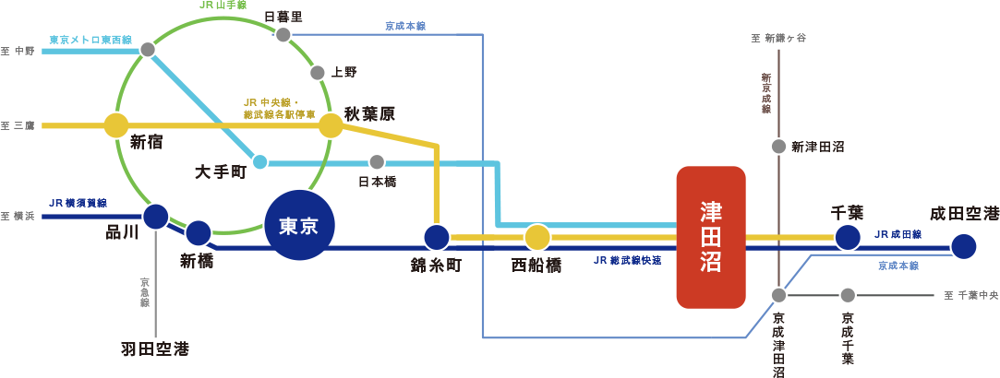

～津田沼でお酒が買える場所5選！～

ザ・ガーデン自由が丘
津田沼駅内にあるスーパーマーケット、「ザ・ガーデン自由ヶ丘ペリエ津田沼店」。季節の商品や限定商品など、いつ来ても楽しい売り場。駅中ならではの「ちょっと欲しい商品」も取り揃えています。

ビールやサワー、焼酎、日本酒など置いてあります。種類は少ないですが、帰宅のついでによってお酒を買う場所としてはGood!
---------------------------------------
＜営業時間＞AM8:00～PM10:00
（土曜・日曜・祝日
AM8:00～PM9:00）
＜TEL＞ 047-403-7191
＜FAX＞ 047-403-7192
＜住所＞千葉県習志野市津田沼1-1-1
ペリエ津田沼 改札内
---------------------------------------

アクセスしやすい交通機関
津田沼は交通機関が発達しており、JR中央線・総武線（各駅停車）、JR横須賀線、東京メトロ東西線、JR成田線が直通運転しており、横浜方面から成田まで幅広くアクセスが可能です。また、京成津田沼駅があり京成電鉄と新京成電鉄が通っています。
始発電車があるので、座って通勤することもでき、主要都市へ乗り換えなしでアクセスできるのも大きな魅力です。